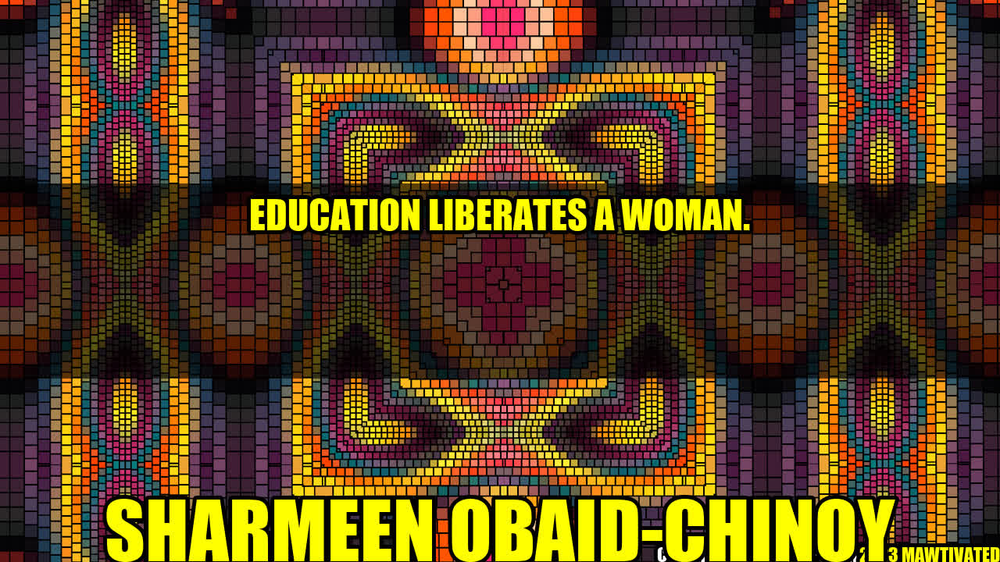

Education: The Key to Women's Liberation
Women have long been oppressed, deprived of basic rights and relegated to subservient roles in many societies. However, education has proven to be a powerful tool for women's empowerment and liberation. Through education, women are able to gain the knowledge, skills and confidence needed to challenge social norms, pursue their dreams and achieve equality. In this article, we will explore the ways in which education can empower women, share inspiring stories and examples, and provide practical tips for women seeking to further their education.
An Inspiring Story
One of the most powerful examples of the transformative power of education for women is the story of Malala Yousafzai. Malala is a Pakistani activist and Nobel Prize laureate who became a global symbol of the struggle for girls' education after being shot by the Taliban for advocating for girls' right to education in her home country. Despite the danger, Malala never wavered in her commitment to education and today, she is a leading advocate for universal education and women's rights around the world. Her story serves as a testament to the importance of education in breaking down barriers and empowering women.
The Importance of Education for Women
- Equal opportunities: Education provides women with the same opportunities for personal and professional growth as men. By acquiring knowledge and skills, women are better equipped to enter the workforce, generate income and contribute to their communities.
- Improved health: Educated women are more likely to make informed decisions about their health and that of their families. They are more likely to access healthcare services, engage in healthy behaviors and have better maternal and child health outcomes.
- Social and political empowerment: Education helps women to develop critical thinking and analytical skills, enabling them to participate fully in society as informed citizens and leaders. Educated women are more likely to be politically active and to advocate for policies that advance gender equality.
Examples of Women Empowered by Education
There are countless examples of women whose lives have been transformed by education:
- Mira Rai: A Nepalese trail runner who won international competitions and became a role model for girls in her village after receiving an athletic scholarship.
- Fawzia Koofi: An Afghan politician and women's rights activist who became the first woman to be elected Vice President of the Afghan Parliament after obtaining an education despite facing many obstacles and threats.
- Thandiwe Chama: A Zambian entrepreneur and founder of a women's farming cooperative who used her education to overcome poverty and create economic opportunities for rural women.
Practical Tips for Women Seeking Education
For women seeking to further their education, here are some practical tips:
- Set goals: Start by setting clear goals for your education and identifying the academic programs or courses that will help you achieve those goals.
- Find support: Seek out support from your family, friends or community members who can provide encouragement, assistance with childcare or other logistics.
- Explore financial aid options: Look for scholarships, grants, loans, or other financial aid options that can help you cover the costs of tuition and other expenses.
- Take advantage of resources: Use resources such as libraries, online tutorials or study groups to supplement your formal education and enhance your learning experience.
In Conclusion
In conclusion, education is a powerful tool that can liberate women from oppressive social norms, empower them to pursue their dreams and goals, and achieve equality. Through education, women gain the knowledge and skills they need to be active participants in their communities, advocates for social change, and leaders in their fields. By investing in women's education, we can create a more just, equitable and prosperous world for everyone.
Key Takeaways:
- Education provides women with equal opportunities for personal and professional growth as men.
- Through education, women can improve their health, become socially and politically empowered, and transform their lives and communities.
- Practical tips for women seeking education include setting goals, finding support, exploring financial aid options, and taking advantage of resources.
Curated by Team Akash.Mittal.Blog
Share on Twitter Share on LinkedIn